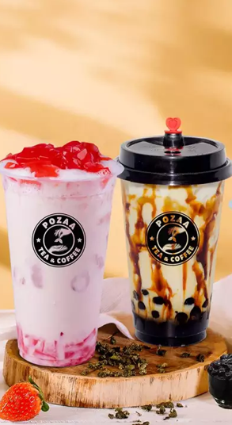

Giới thiệu
MILKSTORES hiện là chuỗi cửa hàng đồ uống lớn nhất tại Việt Nam. Những sản phẩm từ MILKSTORES đang như một cơn bão rất nhanh chóng lan rộng ra xung quanh những nước Châu Á. Đi đến đâu sản phẩm của MILKSTORES cũng nhận được sự yêu quý của khách hàng các nước. Đây cũng là loại trà có hương vị khác biệt nhất, đủ tiêu chuẩn và là thương hiệu đồ uống duy nhất để đưa vào giới thiệu tại Shanghai World Expo 2010.
MILKSTORES hiện tại đã có chi nhánh cửa hàng tại Đài Loan, Nhật Bản, Trung Quốc, Hồng Kong, Indonesia, Malaisia, Singapor, Việt Nam, Myanma, Brunei, v.v..
Trong suốt quá trình phát triển của mình MILKSTORESluôn tập trung vào việc kết hợp và tạo ra những sản phẩm chất lượng cao nhất và phải tạo được sự khác biệt so với những sản phẩm cùng loại trên thị trường. Để làm được điều này, chỉ số chất lượng của tất cả các nguyên liệu và các thành phần được sử dụng trong các sản phẩm của MILKSTORES không chỉ vượt qua được chứng nhận SGS Đài Loan mà họ cũng đã vượt qua 231 bài thử nghiệm chất lượng của SGS Nhật Bản về việc cấp phép nhập khẩu. Dingtea hoàn toàn không sử dụng hương liệu phụ gia để bảo quản. Ngoài tính đặc trưng hơn so với các sản phẩm khác, Sản phẩm của MILKSTORES còn thể hiện văn hóa trà chuyên nghiệp, tinh tế và độc đáo của người Đài Loan.


Để luôn có được loại trà tốt nhất, MILKSTORES đã ký hợp đồng với những nông dân ở vùng cao. Chăm sóc tại những vườn chè với nhiệt độ thấp và có độ cao lên đến 1000m, cùng với việc lựa chọn tỉ mỉ một đầu-hai-lá, trà đã pha không chỉ toả ra một hương vị ngọt ngào mà còn có mùi thơm đặc biệt. Phần lớn các loại trà trên thị trường đều có xuất xứ từ Trung Quốc, hương thơm được tăng lên thông qua việc sử dụng các phụ gia, trong khi vị đắng và vị ngọt được điều chỉnh thông qua các chất làm ngọt, do đó chất lượng có sự khác biệt đáng kể so với sản phẩm của MILKSTORES.